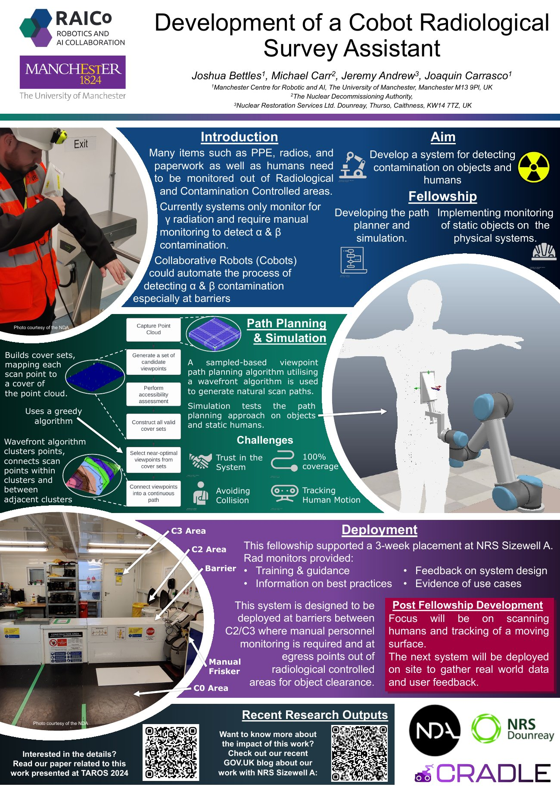

What if a robot could scan for radioactive contamination, so health physics specialists can focus on the jobs only they can do?
That was the question behind my 2024–25 RAICo (Robotics and AI Collaboration) Junior Fellowship. Alongside my PhD in CRADLE at The University of Manchester, the fellowship gave me time, funding and access to RAICo’s facilities to turn some of my research into a working demonstrator. The project was titled Development of a Cobot Radiological Survey Assistant.
The challenge
Nearly every operation on a decommissioning site needs the involvement, and the safety checks, of a health physics specialist, and there is a shortage of them. Much of their time goes on tedious, repetitive tasks, which makes them a bottleneck for the whole site. One of those tasks is monitoring: items such as PPE, radios and paperwork, as well as people, must be checked for contamination before leaving radiological and contamination controlled areas.
Whole body and small article monitors only reliably detect gamma radiation, so alpha and beta contamination still has to be checked by hand, with a person moving a probe over every surface. That is slow and costly, and it depends on exactly the people the industry is short of.
The project
The idea was to hand that job to a collaborative robot (cobot). The demonstrator paired a cobot arm with RGB-D cameras and a DP6 radiation probe. The cameras capture a point cloud of whatever needs scanning, and a planner works out how the arm should move the probe over its surface.
The planner is a sampling-based viewpoint approach. It generates candidate viewpoints around the object and assesses which ones the probe can actually reach, then uses a greedy algorithm to pick a near-optimal set that covers the whole surface. Finally, a wavefront algorithm connects those scan points into a continuous, natural-looking path. A useful side effect is that the system can flag the areas it can’t scan, which matters when the aim is to guarantee that nothing has been missed. I also adapted the approach to use dual quaternions and constrained controllers.
I built the simulation first, covering the manipulator, the object and the sensors. I then used it to test the approach on flat surfaces, simple static objects and static human models, before taking it onto the real system at RAICo.

What worked, and what didn’t
The simulation worked well, and we were able to prove the approach on flat surfaces and simple static objects. The system identified the regions it couldn’t scan and covered everything else. I also got to see the real system move and work, which was easily the most rewarding part of the fellowship.
Real hardware is never as kind as simulation, though. A connectivity problem with the robot hampered a lot of my testing, and in the end it was traced back to the computer I was using rather than the robot itself. I tried several fixes, including new hardware, and by the time I had found the cause I had no experiment trips left to repeat the work on RAICo’s own PC. As a result, the system only ran on occasion, and I came away with qualitative results and plenty of video and photos rather than the quantitative data I had hoped for. Those results did show me the limits of the approach, which is exactly what shaped the next iteration.
Learning from the people who do the job
The fellowship also funded my three-week placement at NRS Sizewell A, where the radiological monitoring team trained me, shared best practice, gave feedback on the system design and showed me real use cases. That is why the system is designed to sit at barriers between contamination controlled areas, where manual personnel monitoring is currently required, and at egress points out of radiological controlled areas for clearing objects.
Back at RAICo, I spent around 16 days on site across several trips, running experiments and talking to the academics and wider community. The academic showcase was a real highlight: it brought the supply chain together to see the work, several people got in touch afterwards, and I came away with some key connections.
I think the most valuable aspect of working with RAICo was coming to RAICo and engaging with the academics and wider community. Both through the placement and the showcase, with the showcase being extremely valuable as I gained several key connections from it.
Beyond the robot
The programme also included commercialisation workshops delivered by FIS360, plus career coaching. My project would be difficult to commercialise in its current state, but the workshops taught me a lot about how research turns into products and gave me real insight into the world of start-ups, along with plenty of new options to think about for my career.
What’s next
This work forms part of my wider PhD. The next step is to reformulate the problem, moving from planning a scan path in advance to controlling the robot as it scans, which should address the limitations I hit with the sampling approach. The focus will then move to scanning humans and tracking a moving surface, with safe human-robot interaction a key requirement, and eventually deploying a system on site to gather real-world data and user feedback. The earlier version of this work was presented at TAROS 2024, and you can read the paper on my publications page.
Advice for future fellows
If I started again, I would make a detailed plan at the start and stick to it, without getting distracted by other work, because the time goes very quickly. And I would get up to RAICo sooner and for longer. Being there, running experiments and working alongside everyone else was the most useful and rewarding part of the fellowship.
Thank you to my supervisors Joaquin Carrasco and Bruno Adorno, to Michael Carr at the NDA and Jeremy Andrew at NRS Dounreay, to the RAICo team and my mentor, and to NRS Dounreay and the NDA for their support of this work.